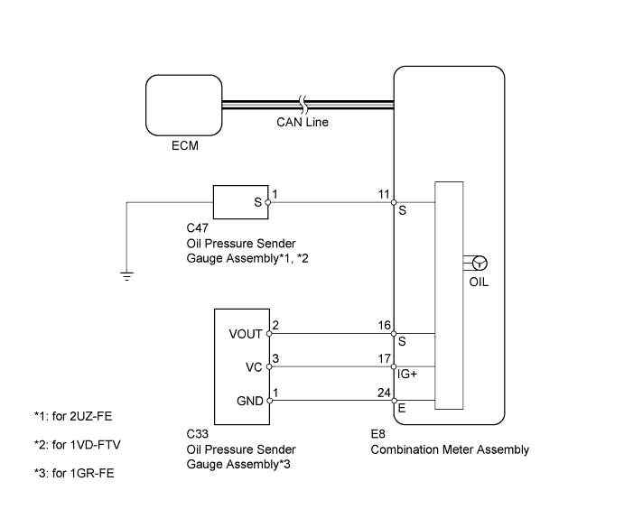
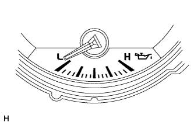
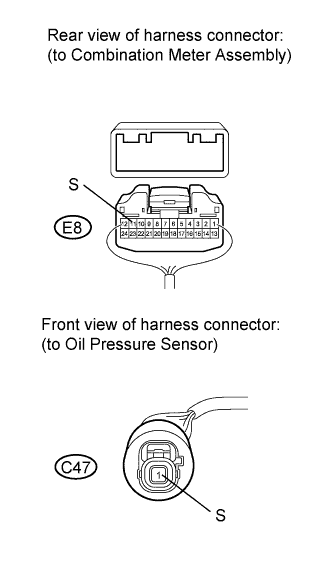
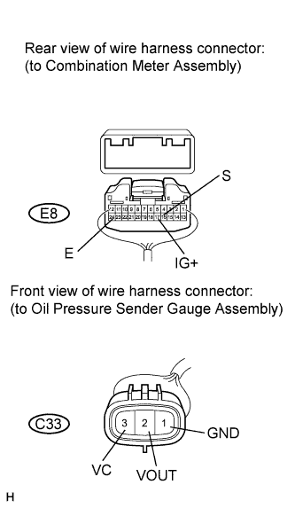

METER / GAUGE SYSTEM > Oil Pressure Gauge Malfunction |

| 1.CHECK CAN COMMUNICATION SYSTEM |
Check for DTCs (Click here).
| Result | Proceed to |
| CAN communication system DTC is not output | A |
| CAN communication system (for LHD) DTC is output | B |
| CAN communication system (for RHD) DTC is output | C |
|
| ||||
|
| ||||
| A | |
| 2.PERFORM ACTIVE TEST USING INTELLIGENT TESTER (OIL PRESSURE SENSOR) |
Operate the intelligent tester according to the display and select Active Test (Click here).
| Tester Display | Test Part | Control Range | Diagnostic Note |
| Oil Pressure Meter Operation | Oil pressure receiver gauge | LOW, 1/4, 1/2, 3/4 or HIGH | Perform the test with the vehicle stopped and engine idling. |
| Result | Proceed to |
| OK | A |
| NG (w/ Multi-information Display) | B |
| NG (w/o Multi-information Display) | C |
|
| ||||
|
| ||||
| A | |
| 3.INSPECT OIL PRESSURE GAUGE ASSEMBLY (OIL PRESSURE SENSOR) |
 |
Check that the needle moves in accordance with the engine speed.
| Result | Proceed to |
| Oil pressure receiver gauge operates correctly according to engine condition | A |
| Oil pressure receiver gauge does not operate correctly according to engine condition (for 1GR-FE) | B |
| Oil pressure receiver gauge does not operate correctly according to engine condition (for 2UZ-FE) | C |
| Oil pressure receiver gauge does not operate correctly according to engine condition (for 1VD-FTV) | D |
|
| ||||
|
| ||||
|
| ||||
| A | |
| 4.CHECK HARNESS AND CONNECTOR (COMBINATION METER - OIL PRESSURE SENSOR) |
  |
for 2UZ-FE, 1VD-FTV:
Disconnect the E8 meter connector.
Disconnect the C47 gauge connector.
Measure the resistance according to the value(s) in the table below.
| Tester Connection | Condition | Specified Condition |
| E8-11 (S) - C47-1 (S) | Always | Below 1 Ω |
| E8-11 (S) or C47-1 (S) - Body ground | Always | 10 kΩ or higher |
for 1GR-FE:
Disconnect the E8 meter connector.
Disconnect the C33 gauge connector.
Measure the resistance according to the value(s) in the table below.
| Tester Connection | Condition | Specified Condition |
| E8-16 (S) - C33-2 (VOUT) | Always | Below 1 Ω |
| E8-17 (IG+) - C33-3 (VC) | ||
| E8-24 (E) - C33-1 (GND) | ||
| E8-16 (S) or C33-2 (VOUT) - Body ground | Always | 10 kΩ or higher |
| E8-17 (IG+) or C33-3 (VC) - Body ground |
| Result | Proceed to |
| NG | A |
| OK (w/ Multi-information Display) | B |
| OK (w/o Multi-information Display) | C |
|
| ||||
|
| ||||
| A | ||
| ||